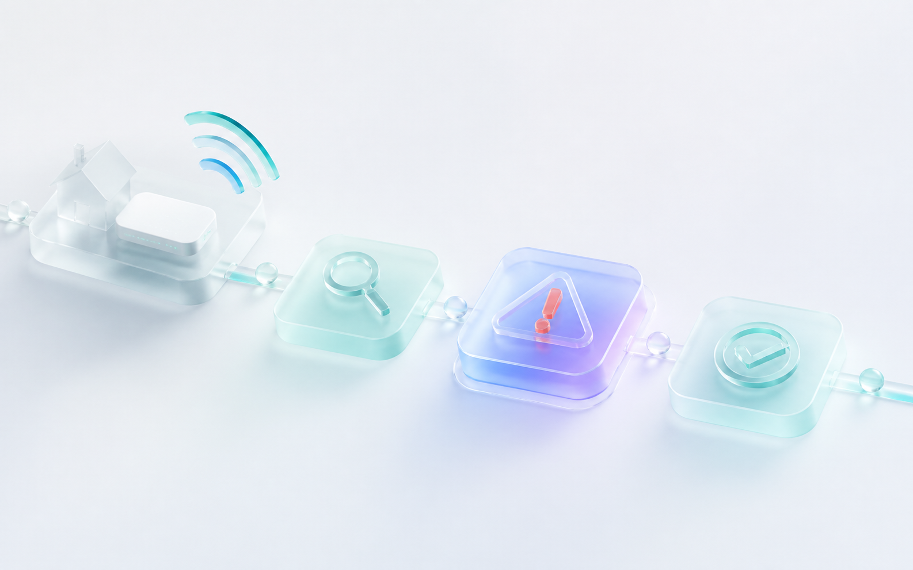
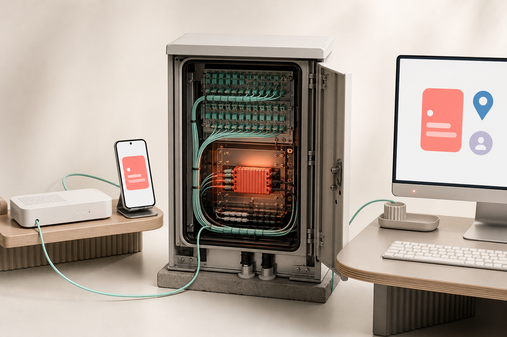

Абонент
Хочет понять масштаб проблемы, следующий апдейт и нужно ли что-то делать дома.
02 · Service design · KUBTEL
Концепция сервиса для аварии: человек понимает, что случилось, что делает KUBTEL и когда будет следующая проверенная информация. При переходе в поддержку контекст не начинается заново.

Бригада устраняет повреждение линии. Следующая информация — до 16:30.
01 — О проекте / контекст
KUBTEL — интернет-провайдер. В публичных материалах есть личный кабинет, финансовые разделы и каналы помощи. Концепция фокусируется на вторичной боли аварии: не только «связь пропала», но и «непонятно, что уже известно и нужно ли снова обращаться».
Хочет понять масштаб проблемы, следующий апдейт и нужно ли что-то делать дома.
Должна увидеть адрес, услугу, инцидент, показанный статус и уже выполненные действия.
Если статуса нет или он не объясняет следующий шаг, обращение повторяется и контекст приходится собирать заново.
02 — Команда и роли
В исходных материалах зафиксирована моя роль и исследовательская работа по открытым источникам. Кто согласовывал решение внутри KUBTEL и какие системы участвовали, не описано.
Product / UX Engineer: framing проблемы, модель статусов, сквозной flow, концепция интерфейсов и план проверки.
Для реализации нужны владелец сервиса, оператор поддержки, сетевой инженер и владелец CRM/личного кабинета. Их реальные роли и ограничения требуют подтверждения.
03 — Определение проблемы
При аварии человек ищет ответ в кабинете, звонит в поддержку и повторяет адрес, услугу и уже пройденные шаги. Для компании это означает повторную работу и риск закрыть историю без подтверждения восстановления.
Нет единого контекста: причина, этап ремонта и время следующего сообщения живут раздельно.
Адрес связан с инцидентом, статус одинаков в кабинете и поддержке, восстановление закрывается ответом абонента.
04 — Исследование и доказательства
Я изучил официальный сайт KUBTEL, условия использования личного кабинета и публичные отзывы. Отдельных интервью с абонентами, операторами и сетевой службой в исходных материалах нет.
151 — число отзывов, зафиксированное в исходном анализе; это не репрезентативная выборка.

«Статус — это обещание вернуться с проверенной информацией, а не просто карточка в кабинете».
Авторская формулировка принципа, не цитата пользователя
05 — Метрики успеха
Все показатели требуют baseline. Сравнивать нужно похожие аварии, периоды и регионы.
06 — Гипотезы и приоритеты
Приоритет расставлен по цене неопределённости и зависимости от данных.
07 — Интервью / валидация
Целевая выборка: 3 абонента после аварии, 2 оператора поддержки и владелец процесса/NOC. Искать через службу поддержки или региональный пилот; не заменять реальные разговоры чтением отзывов.
08 — Количественный опрос / дополнительные данные
В исходном анализе зафиксированы 151 публичный отзыв и тематические сигналы про дозвон, сроки и обратную связь. Выборка самоотобранная и не позволяет оценить долю пользователей.
Разделить отзывы и обращения на отсутствие статуса, сроков, контекста и проблему самой линии.
Сопоставить incident ID, канал контакта, показанный статус и повторное обращение в 24 часа.
Это можно сказать только после сравнения похожих аварий до и после пилота.
09 — User Flow
Внутри каждого шага остаётся общий контекст: адрес, услуга, incident ID, статус, свежесть и следующее действие.
10 — Решения и макеты
Макеты показывают проектную логику. Адреса, номера инцидентов и время в интерфейсе — демонстрационные данные.
«Ремонт идёт» отделён от обещания «следующая информация до 16:30». Точный срок ремонта не выдумывается.
Адрес, услуга, incident ID, показанный статус и действие абонента открываются в обращении K-6021.
11 — UX-тесты
План: 6 участников — 3 абонента, 2 оператора поддержки и 1 владелец процесса. Тестировать прототип на сценарии массовой аварии и перехода из кабинета в поддержку.
12 — Итоговое решение
Концепция связывает личный кабинет, поддержку и уведомление общей записью инцидента. Пользователь получает честное обещание следующей информации, а команда — продолжение разговора с текущего места.
13 — План проверки / пилот
Нужно проверить, что ясный статус снижает повторные обращения, а не просто меняет канал контакта.
Разобрать обращения по авариям, причины повторного контакта и текущий handoff между кабинетом и CRM.
Провести тест на 6 участниках, измерить понимание масштаба, апдейта и завершения.
Сравнить похожие аварии до и после; оставить контрольный период, если операционно допустимо.
Сверить повторный контакт 24 часа, время до ясного статуса, handoff и самостоятельное завершение.
14 — Выводы
Я перевёл размытую проблему «во время аварии непонятно, что происходит» в модель статусов, handoff и проверяемые метрики. Ограничение кейса — нет внутренних данных, интервью и внедрения, поэтому эффект не заявлен.
Следующий апдейт не маскируется под срок полного ремонта.
Статус должен жить в кабинете, поддержке и операционных данных одновременно.
Добавить обращения, интервью, baseline и результаты регионального пилота.
Вывод для продукта